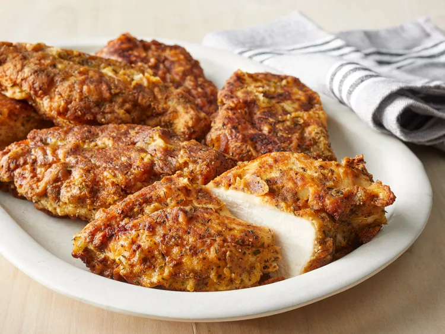

Pan Fried Chicken
Home

Description
A protein-rich meal that's delivious and very easy to make. With little preparation, you can get incredible results in short time!
Ingredients
- 2 cups flour
- 2 tablespoons salt
- 2 tablespoons ground black pepper
- 1 tablespoon ground ginger
- 1 tablespoon dry mustard powder
- 1 tablespoon dried thyme leaves
- 1 egg
- 1/4 cup milk
- 8 (6 ounce) skinless, honeless chikcen breast halves
- 1/2 cup vegetable oil
Directions